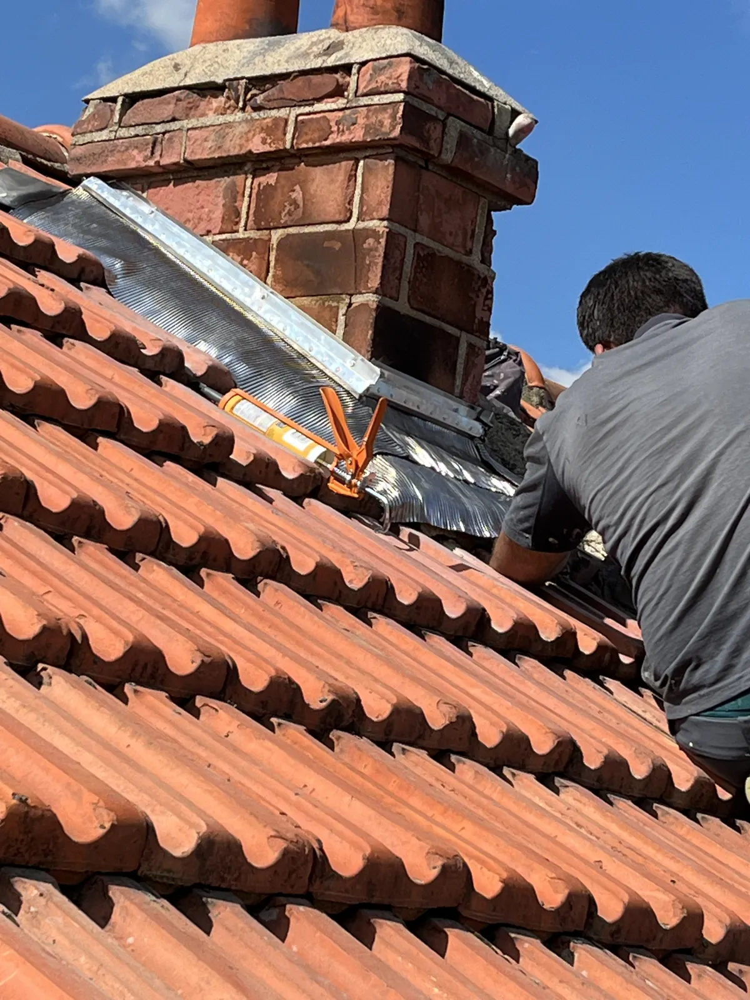
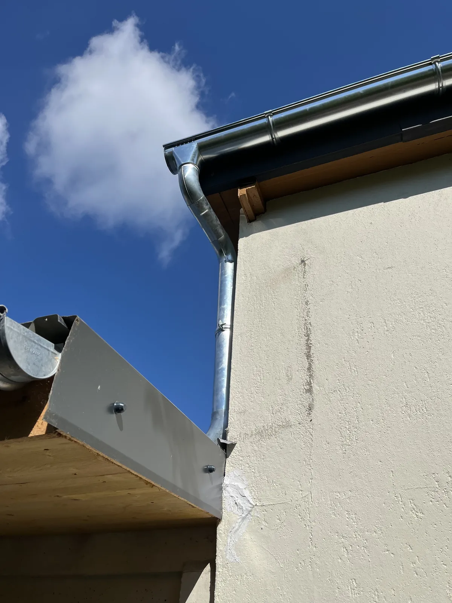

Brian Lafleur a déjà rénové plusieurs maisons à Wissous : toiture et façade complètes, descentes d'eaux pluviales en zinc, solin de cheminée. Il intervient depuis Chilly-Mazarin pour vos travaux de couverture, de zinguerie et d'entretien, avec un devis gratuit sous 24h.
Les photos plus bas viennent de chantiers menés à Wissous. Une maison y a été rénovée de haut en bas, toiture en tuiles et façade ravalée. Sur une autre, Brian a posé une descente d'eaux pluviales en zinc et refait le solin autour de la cheminée. Ce sont les travaux que les propriétaires de Wissous demandent le plus souvent.
Dépose, écran sous-toiture, liteaunage et tuiles neuves à Wissous. Une toiture étanche pour des décennies.
En savoir plus →Brian trouve d'où vient l'eau et répare : tuile, faîtage, solin ou noue. Bâchage si besoin.
En savoir plus →Gouttières, descentes, chéneaux et solins en zinc, posés et soudés sur mesure.
En savoir plus →Démoussage, nettoyage et traitement hydrofuge pour prolonger la vie de votre toit.
En savoir plus →Pose et remplacement de fenêtres de toit, raccordées à la couverture sans risque de fuite.
En savoir plus →Ramonage de conduit de cheminée ou de poêle, avec contrôle du solin et de la sortie de toit.
En savoir plus →Ravalement et peinture de façade, avec la toiture en même temps si besoin, pour un seul échafaudage.
En savoir plus →Entre le vieux village et les quartiers pavillonnaires, Wissous compte beaucoup de maisons avec une toiture en tuiles et une cheminée. Le raccord entre la cheminée et les tuiles est l'endroit où l'eau s'infiltre le plus souvent. Brian le refait en zinc, sur mesure, comme sur le chantier en photo.
Les gouttières et les descentes comptent tout autant. Une descente bouchée ou percée fait ruisseler l'eau sur la façade et finit par l'abîmer. Brian pose des descentes en zinc soudées qui durent des décennies.
Quelques travaux menés par Brian Lafleur à Wissous.



Vous expliquez votre besoin au 06 43 14 22 97 ou via le formulaire.
Brian vient sur place gratuitement et vous remet un devis clair sous 24h.
Les travaux démarrent à la date convenue, chantier bâché et tenu propre.
Vous faites le tour du chantier avec Brian. Couverture garantie décennale.
« Entreprise très professionnelle autant pour le respect des délais que pour la qualité du travail effectué. Point important : le service après-vente est bien présent. »
Patrice Marceau · Avis Google« Ponctualité, sourire et excellent travail pour les faîtières et le démoussage de la toiture. Je recommande vivement. Et rendez-vous très rapide ! »
Marie-Claude Viart · Avis Google« Super travaux. M. Lafleur est très sérieux et efficace. Je le recommande à 200 %. »
Aline Pires · Avis GoogleDéplacement et devis gratuits, réponse sous 24h. Travaux de couverture garantis décennale.